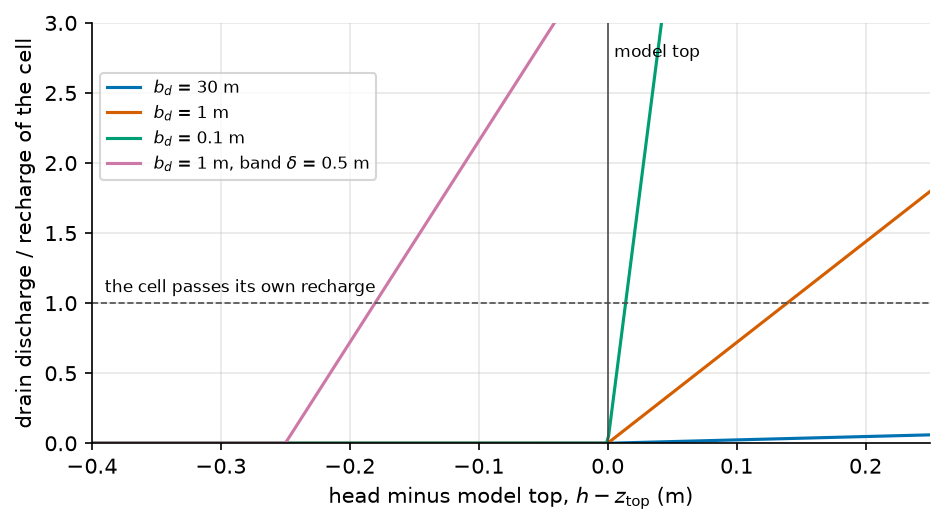

Drains and evapotranspiration at the top of the model#
Two exits act at the top of the model. A drain discharges where the water table reaches the ground. The evapotranspiration package draws water where the water table is shallow. Recharge is not an exit, but it is written by the same step of the build and it decides what the drains carry, so it opens this page.
Notation of this page
Symbol |
Meaning |
Unit |
Set by |
|---|---|---|---|
\(h\) |
hydraulic head, measured from a fixed datum |
m |
solved, not set |
\(z_\mathrm{top}\) |
model top, the land surface |
m |
|
\(K\) |
horizontal hydraulic conductivity, the same along \(x\) and \(y\) |
m/s |
|
\(N\) |
recharge rate, positive into the aquifer |
m/s |
|
\(n, m\) |
cell indices; \(\mathcal{N}(n)\) is the set of cells that share a face with \(n\) |
the grid, The mesh |
|
\(a_n\) |
plan area of cell \(n\) |
m² |
the grid |
\(C_n\) |
drain conductance of cell \(n\) |
m²/s |
|
\(C_\mathrm{min}\) |
floor of every drain conductance |
m²/s |
|
\(b_d\) |
thickness of the drain bed in the derived conductance |
m |
|
\(\delta\) |
depth of the sub-cell discharge band of a drain |
m |
|
\(z^d_n\) |
drain elevation of cell \(n\) |
m |
derived |
\(E^\mathrm{et}_n\) |
evapotranspiration rate the package may draw from the water table of cell \(n\) |
m/s |
|
\(z_\mathrm{et}\) |
elevation where the evapotranspiration is at its full rate |
m |
derived |
\(d_\mathrm{ext}\) |
extinction depth of the evapotranspiration, below its surface |
m |
|
\(o_\mathrm{et}\) |
distance of the evapotranspiration surface below its reference |
m |
Recharge in#
MODFLOW 6 reads the recharge as one array per stress period (RCHA), put on the top layer or on the first active layer below it (RCHA input guide). HydroModPy adds one rule: the recharge is set to zero on lake cells. The lake already takes its own rain through LAK, and otherwise RCHA would move the recharge of a lake cell to the first active cell under the lake, so the rain would be counted twice.
The recharge comes from a series or a grid that the run loads, or from the daily soil reservoir of The daily soil reservoir. How it becomes one value per stress period, and how a negative recharge is split, is on Rain and evaporation: the forcing.
In the code: mask_recharge_on_lake_cells.
Evapotranspiration out#
Both MODFLOW solvers use the same linear law [Harbaugh, 2005, Langevin et al., 2017]: the package draws water at the full rate \(E^\mathrm{et}_n\) when the head is at or above the surface \(z_\mathrm{et}\), and at a rate that falls linearly to zero at the depth \(d_\mathrm{ext}\) below it (input guides: EVTA, EVT). HydroModPy chooses the rate, the surface and the depth from three sources.
Source |
Rate \(E^\mathrm{et}_n\) |
Surface \(z_\mathrm{et}\) |
Depth \(d_\mathrm{ext}\) |
|---|---|---|---|
MODFLOW 6, deficit of a negative recharge |
the deficit \(N^-_k\) |
\(z_{\mathrm{top},n}\) |
|
MODFLOW 6, the ETP the soil reservoir left unmet |
that residual ETP |
\(z^d_n - o_\mathrm{et}\) |
|
MODFLOW-NWT, the loaded ETP and the deficit |
the ETP as loaded, plus the deficit |
\(z_{\mathrm{top},n} - o_\mathrm{et}\) |
\(z^d_n\) is the drain elevation of the cell (below): the top, or the top lowered by
half the band, and the top when the run has no drain. The surface of the soil
residual sits there because the soil has already taken the ETP it could, and
what is left may only draw from water that would otherwise reach the drain. The
card of surface_offset says which
value applies to which solver.
The sea cells, the river cells and the lake cells carry no aquifer evapotranspiration: a lake evaporates through LAK. The deficit of a negative recharge is also kept off the cells that have no active layer.
The word "etp" in flow.active_sinks_sources acts differently by solver.
Under MODFLOW-NWT the loaded ETP drives the package. Under MODFLOW 6 it acts in
soil mode only, where it sends the residual ETP of the reservoir to EVTA; outside
soil mode MODFLOW 6 ignores it and logs a warning. The Boussinesq solver refuses
it.
In the code: build_evt_array_stress_period_data.
The drain law#
The drain is the one-sided law of the DRN package of both MODFLOW solvers [Harbaugh, 2005, Langevin et al., 2017]: it removes water in proportion to the head above the drain elevation \(z^d_n\) and never feeds the aquifer (input guide: DRN). In HydroModPy the drain stands for seepage at the ground surface. There is one row per cell, in the top layer, at the elevation of the top. The cells outside the model domain, the sea cells and the river cells carry no row. The rows are dropped later in the cells that host a connected reach (Streams and the water mover) and in the cells of a lake bed that stays active (Lakes and reservoirs). A drain does not read \(D\): its elevation is \(z_{\mathrm{top},n}\), never the filled \(\tilde z_n\).
The conductance#
When the file declares a conductance, every cell takes it as a conductance per cell, with the floor: \(C_n = \max(C^\mathrm{decl}, C_\mathrm{min})\). When it declares none, which is the case of example 04, each drain derives its conductance from the conductivity of its cell:
The thickness \(b_d\) is that of the clogging layer at the bottom of a watercourse, decimetres to a metre. It is not the thickness of an aquifer layer. A cell passes its own recharge when the head stands above the drain elevation by
The excess does not depend on the size of the cell. It depends on \(K/N\), the ratio a network calibration searches (Downslope distance between two networks), and on \(b_d\). The drain is meant to be a seepage face: \(K\) and the recharge decide where the water surfaces, and the drain must not limit it. The floor \(C_\mathrm{min}\) exists only for a degenerate cell, a zero conductivity for instance, whose formula would give a conductance MODFLOW reads as no drain at all.
A zero or a negative declared value selects the derivation; it does not close the boundary. The conductance is static unless the value is a series. A period is written only when the declared value changes, and MODFLOW 6 reuses the last data for the periods left out.
The bed thickness \(b_d\) is solver.drain_bed_thickness_m. The
Boussinesq solver derives its drain conductance with the same \(b_d\), without the
floor (Boussinesq theory).
In the code: hk_fallback_drain_conductance.
The discharge band#
A single drain elevation says that the land inside a cell is flat. The USGS
remedy is a sub-cell discharge band, not an edit of the elevation
[Langevin et al., 2017], with a depth that can come from the standard deviation of
the fine land surface elevations inside the cell [Feinstein et al., 2020].
With a band of depth \(\delta\)
(solver.drain_band_depth_m), the drain sits lower and its conductance
grows:
The factor is the bed thickness and not the cell area: the conductance it scales is already \(K_n a_n / b_d\), so the product is \(K_n a_n / \delta\), the conductance of a band of depth \(\delta\). With the derived conductance, \(b_d\) drops out. The cell begins to discharge before the head reaches its mean elevation, and discharges harder as the head climbs into the band. No elevation is raised and no DEM is rewritten. MODFLOW 6 solves its own band with a smooth curve; this rule is the piecewise equivalent, applied alike by both MODFLOW solvers.
The seepage mask of Where the water table reaches the surface reads the band: a banded cell discharges at \(z_{\mathrm{top},n} - \delta/2\) and never climbs back to its top, so the run keeps \(\delta\) in its store for every reader.
In the code: drain_discharge_band.
The other answer: no drain in the pits#
solver.sink_fill sets the conductance to zero in every cell that sits in
a closed depression of the top. The depressions are found on the solver mesh by
a priority flood seeded on every cell water can leave the domain through, counted
on the shared faces that MODFLOW connects. Both MODFLOW solvers read the same
mask. No manual or USGS document removes a discharge boundary where a pit is
found, and the card of the key says so. The band and this key answer the same
question in opposite directions, and a file that sets both is refused.
One cell, by hand#
A cell of 25 m by 25 m (\(a_n = 625\) m²), \(K = 10^{-7}\) m/s, and a recharge of 439 mm per year, \(1.39 \times 10^{-8}\) m/s. The conductance and the head the drain needs to pass the recharge, from (35), (36) and (37):
Drain bed \(b_d\) |
Band \(\delta\) |
\(C_n\) (m²/s) |
Drain elevation |
Head above it |
|---|---|---|---|---|
30 m |
none |
\(2.08 \times 10^{-6}\) |
\(z_\mathrm{top}\) |
4.17 m |
1 m |
none |
\(6.25 \times 10^{-5}\) |
\(z_\mathrm{top}\) |
13.9 cm |
0.1 m |
none |
\(6.25 \times 10^{-4}\) |
\(z_\mathrm{top}\) |
1.4 cm |
1 m |
0.5 m |
\(1.25 \times 10^{-4}\) |
\(z_\mathrm{top} - 0.25\) m |
7.0 cm |
The first row takes a layer thickness as the bed. The drain, not the aquifer, then limits the discharge. In the last row the head stands 7.0 cm above a drain 25 cm under the top: the cell passes its recharge 18 cm under the ground.

Fig. 53 The four rows of the table as curves, from hk_fallback_drain_conductance
and drain_discharge_band. The dashed line is the discharge that passes
the recharge of the cell. The 30 m bed reaches it 4.17 m above the top, off
the figure.#
Assumptions#
A drain is a seepage face: the head the drain itself needs to pass the recharge is small beside the thickness of the aquifer.
The land inside a cell is flat, unless a band is declared.
Recharge is a flux set from outside. It does not read the water table.
Limits#
A drain cell has one elevation. The band is the one remedy. It applies to every drain cell alike and classifies nothing.
A declared conductance has a floor under MODFLOW 6 only. MODFLOW-NWT takes it as it is.
The ETP is not read under MODFLOW 6 outside soil mode. A loaded ETP is ignored, with a warning.
Parameters of this page#
Checked by#
The tests that import the code of this page. The box is generated: a new test appears here on the next build.
20 test files import hydromodpy.solver.modflow_common.drain_conductance, hydromodpy.solver.modflow6.builders.recharge, hydromodpy.solver.modflow6.builders.boundary_conditions, hydromodpy.solver.modflow_nwt.nwt.payloads. Their names say what they check.
integration: 1
- Shared recharge equivalence.
unit: 19
- A trial tells the solver when its recharge is its own. calibration
- The sandbox removes the recharge its trial wrote. calibration
- A constant head below its bottom is refused. solver/modflow_nwt
- A calibration trial value reaches the soil evt package. solver
- A trial that moves the recharge writes it inside its own folder. solver
- Boussinesq drain bed thickness. solver
- Drain discharge band. solver
- First clim is one rule for every solver. solver
- Modflow6 drn conductance. solver
- Modflow6 reads the etp only when the soil sent it. solver
- Modflow6 steady recharge evt. solver
- Modflow6 voronoi dual support. solver
- Recharge stack is released. solver
- Sink fill. solver
- The atelier etp still draws no evt under modflow6. solver
- The recharge files keep their name and bytes. solver
- The soil evt rate goes to binary files. solver
- The soil evt rate is zero on inactive lake and constant head cells. solver
- The soil evt surface follows the drain elevation. solver
In the code#
What |
Where |
|---|---|
Recharge, EVTA, the lake mask |
|
Drain rows |
|
Derived conductance and band |
|
Drains and EVT under MODFLOW-NWT |
|